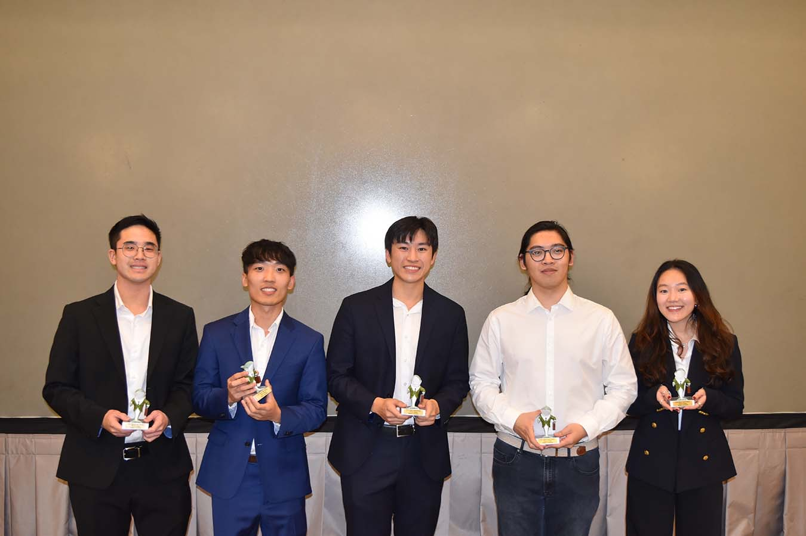

Meet the Team

Member Name
Lead Robotics Engineer

Member Name
Software Developer

The Full Team
A passionate group dedicated to accessible autonomous solutions.
Your semi-autonomous luggage companion, engineered for accessibility and safety in hospitality environments.
Since the supply of workers in the hospitality industry such as airports and hotels has significantly declined post-COVID, people with mobility impairments face more challenges in moving heavy objects such as their luggage to their desired destinations. To improve their quality of life, SmoothOperator provides a general and elegant solution: a robotized dolly. We will develop a network of sensors, actuators, algorithms, and communication protocols for SmoothOperator to semi-autonomously transport luggage through various consumer environments through pre-determined locations or by user commands. In addition to the robotic platform, SmoothOperator system will have a user-friendly UI that allows users to connect and control a specific robot. These controls will have a safety layer that avoids obstacles and puts human interaction at the forefront of its navigation planning. SmoothOperator aims to revolutionize the hospitality industry, enhancing the quality of life for all, particularly individuals with mobility impairments.
In fast-paced environments like airports and hotels, labor shortages are leading to a significant reduction in available service workers. In response, 90% of airports and 36% of hotels have shifted to self-service solutions, according to a recent study by Deloitte. However, these self-service options do not fully address the needs of individuals with mobility impairments, who find it particularly challenging to move heavy luggage or other objects without assistance. As the number of available workers declines, the demand for solutions that cater to these individuals increases.
In fast-paced environments requiring hospitality such as airports and hotels, there is a decline in service workers in the U.S. For those with mobility impairments, moving luggage and heavy objects can be a daunting task. As the number of service workers decreases, we aim to provide a new solution to enhance the quality of life by facilitating easy and safe movement of objects. We seek to create a common platform that can be adaptable to these environments with the ability to help people with mobility impairments or to replace repetitive object delivery services.
Lead Robotics Engineer
Software Developer
A passionate group dedicated to accessible autonomous solutions.